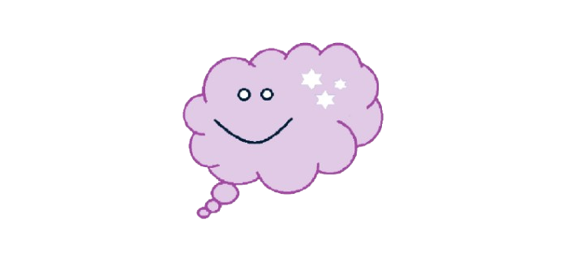

Мене звати Куварзіна Анна. Я навчаюсь на третьому курсі Національного університету "Полтавська політехніка імені Юрія Кондратюка" за спеціальністю Комп’ютерні науки. Мені подобається вивчати сучасні технології та застосовувати їх на практиці.
Моє життя наповнене різними подіями, але головне для мене — це навчання та саморозвиток. Я люблю пізнавати нове і вдосконалювати свої знання у сфері інформаційних технологій.
У вільний час я займаюсь програмуванням. Це не лише цікаве заняття, але й спосіб розвитку логічного мислення та креативності. Мені подобається створювати нові програми, розробляти веб-сайти та експериментувати з різними технологіями.
Нижче наведено приклад простої програми мовою Python:
def greet(name):
print("Привіт,", name, "!")
greet("Світ")